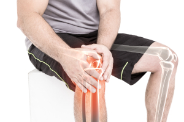

obnovení pohodlí při řízení
Éra bolesti kloubů a páteře skončila!
Inovativní léčba od španělského profesora, která okamžitě zmírní bolest a zaručuje 100% zdravé klouby a páteř

Zabije nová léčba podnikání pilulek, mastí a gelů proti bolesti na bolesti kloubů? Nejprestižnější odborníci v oborech revmatologie, neurologie a fyzioterapie nepochybují, že tomu tak bude. Díky inovativnímu přírodnímu receptu vyvinutému Španěly došlo k dlouho očekávanému průlomu v boji za zdraví kloubů a páteře.
Již více než 14 tisíc pacientů, kteří podstoupili tento léčebný postup, se zbavilo bolesti a zcela obnovilo zdraví svých kloubů a páteře. Výsledkem bylo, že přestali užívat léky proti bolesti, plýtvali majetkem na terapii a trpěli dlouhými frontami za odborníky. Tato léčba dokonce pomohla těm pacientům, kteří kvůli degeneraci, zánětu a bolesti již neměli žádnou naději, že se vyhnou invalidnímu vozíku. Jak je tohle možné?
Profesor Luis Recio (molekulární biolog) se rozhodl vyléčit progresivní osteoartrózu své matky. Chtěl ji zbavit chronické bolesti, ztuhlosti a popraskaných kloubů a obnovit její plnou mobilitu. Tak začala revoluce v revmatologii! Po roce podrobných klinických studií profesor vyvinul makromolekulární vzorec, který je přirozený, bezpečný a snadno použitelný. který okamžitě zmírňuje bolest a opravuje klouby a páteř a zbavuje je ztuhlosti, zánětu, otoků a degenerace. Proto zcela obnovuje fyzické zdraví.
Odborné lékařské časopisy již tuto léčbu nazvaly „průkopnickým pokrokem v revmatologii“. Také profesor obdržel nominaci na Nobelovu cenu za úspěchy. Díky působení tohoto vzorce mohou i lidé s nejtěžšími a dlouhodobými degeneracemi obnovit klouby a páteř, úplně obnovit fyzické zdraví a rozloučit se s léky proti bolesti, které ničí játra.
„Dosud známé metody léčby páteře a kloubů jsou ztrátou času a peněz!“ Jaké jsou důvody si to myslet?
Tato slova potvrzuje více než 14 tisíc spokojených uživatelů makromolekulárního vzorce pro regeneraci kloubů a páteře, kteří se již zbavili bolesti a obnovili 100% svého zdraví. Z tohoto důvodu jsme se rozhodli pečlivě analyzovat dříve známé metody léčby páteře a kloubů, zkontrolovat, jaké jsou jejich nevýhody a s čím se musí každý den potýkat lidé, kteří užívají léky proti bolesti a léky, aby „posílili klouby a páteř“. Tady jsou závěry:
-
Cvičení problém jen zhoršuje.
Existuje mnoho skupin cvičení, která jsou navržena tak, aby „posilovala klouby a páteř“ a musí být prováděna každý den několik minut. Tato cvičení jsou však obvykle velmi bolestivá. Ne každý má sílu a čas na každodenní namáhavé cvičení. Nejhorší ze všeho je, že hrozí malá chyba při cvičení zhoršit poškození klouby a páteř, což může vést k invaliditě.
-
Léky proti bolesti působí krátkou dobu a negativně ovlivňují játra.
Léky proti bolesti vydrží až 3 hodiny. Chcete-li zmírnit chronickou bolest, musíte užívat několikrát denně. Pilulky na „posílení kloubů a páteře“ zase obsahují umělé přísady, které se vyrábějí hromadně za nejnižší cenu. Použití takové chemie je zcela zbytečné. Jelikož se jedná o umělé přísady, lidské tělo je neabsorbuje ani je nepoužívá k regeneraci chrupavky. Na druhou stranu způsobují nekonečný seznam vedlejších účinků, jako je peptické vředy, ztráta sluchu nebo zhoršená funkce ledvin a jater. Vezmete pilulku v naději, že zmírní bolest, ale místo toho bolí stokrát více. To je absurdní a nemá to nic společného s konečným cílem.
-
Je to ztráta času a peněz
Má smysl utratit peníze, které vyděláte, za chemické výrobky, které kromě krátkodobých a bezvýznamných akcí otráví a poškodí tělo? Samozřejmě že ne. Cviky, které děláte samostatně nebo s fyzioterapeutem, jsou navíc časově náročné a nezaručují zlepšení. A nejhorší je, že hrozí, že zhorší onemocnění.
Proto je makromolekulární léčba profesora Resia skutečným milníkem v boji za zdraví kloubů a páteře.
Pilulky poskytují krátkodobou a menší úlevu, ničí trávicí systém a otrávují tělo. Masti a gely zase slouží pouze k obohacení farmaceutických společností. To vše spotřebovává zdraví a peníze, které je tak těžké vydělat. Léčba profesora Recia je však založena pouze na přírodní ingredience a nezpůsobuje žádné vedlejší účinky. Okamžitě každý den zmírňujte bolest a opravujte chrupavku, abyste obnovili pohyblivost a nezanechali stopy otupělosti a bolesti. Tento inovativní vzorec je kombinací nejnovějšího pokroku v molekulární biologii, neurologii a revmatologii.
Složení, které obsahuje zcela přirozené a bezpečné pro zdraví. Díky správnému složení mají také silnější regenerační vlastnosti. Při každodenním používání obnovují pohyblivost iu lidí s těžkými degeneracemi a dlouhodobými záněty nebo poúrazovými komplikacemi.
Kdokoli teď může mít 100% zdravé a silné klouby znovu
Ošetření je k dispozici v maloobchodě s názvem Fortuflex. Makromolekulární vzorec je aktivní krém, který se okamžitě vstřebává do pokožky a okamžitě zmírňuje bolest, otoky a ztuhlost , jak v kloubech, tak v páteři. Na rozdíl od pilulek naplněných chemikáliemi je makromolekulární zpracování pro tělo zcela bezpečné, jak potvrzuje výzkum německého výzkumného centra v Dortmundu.
Tyto testy také prokázaly účinnost léčba přesahuje 98% ... Díky němu dosáhli lidé ve věku 21 až 93 let působivých výsledků: eliminovali bolest, otoky a ztuhlost a také neutralizovali všechny degenerace, záněty a komplikace způsobené úrazy kloubů a páteře bez ohledu na jejich věk.
Osvědčená účinnost
Tito lidé ulevili dokonce i bolesti kloubů a nejsilnější páteři pouhým použitím makromolekulárního vzorce profesora Recia. Díky ní se konečně mohli volně pohybovat a provádět všechny činnosti, které do té chvíle pro bolest nebyly k dispozici.
V následujících dnech léčby vstoupili pacienti do fáze intenzivního zotavování chrupavkové tkáně a synoviální tekutiny, což jim umožnilo eliminovat ztuhlost, necitlivost a praskliny v kostech. Potom oni, posílily klouby, šlachy a svaly o 87% a eliminovaly otoky a záněty. Klouby a páteř byly automaticky rekonstruovány 24 hodin denně.
V důsledku toho byla odstraněna artritida kloubů a páteře a subjekty pociťovaly větší bolest a byly 3x aktivnější. Ale to není vše. Po studii se účastníci shodli znovu získali svou mladistvou mobilitu. Dnes mohou chodit, běhat a tančit bez bolesti a ztuhlosti, stejně jako ve věku 20–25 let!
Zdokumentované účinky léčby hovoří samy za sebe:
zmizení ztuhlosti, otupělosti a popraskaných kostí
odstranění otoků a zánětů
100% obnovení mobility
1 fáze
2 fáze
3 fáze
4 fáze
1 fáze - okamžitá úleva od bolesti; obnovený komfort chůze
2 fáze - intenzivní rekonstrukce chrupavky a synoviální tekutiny; zmizení ztuhlosti, otupělosti a praskání kostí
3 fáze - posílení kloubů, šlach a svalů o 87%; odstranění otoků a zánětů
4 fáze - odstranění degenerace kloubů a páteře; 100% obnovení mobility
Diana (68) a Roberto (66) z Valladolidu byli mezi prvními Španěly, kteří používali Fortuflex:

Diana: „Můj manžel a já pracujeme na naší ekologické farmě mnoho let, to je celý náš život. Nyní, když jsou v módě biopotraviny, jsme museli tvrději pracovat. Byli jsme šťastní, dokud se nám začaly lámat klouby. Cítil jsem bolest a ztuhlost v zápěstích a loktech, skřípání v páteři. Kolena a boky mého manžela začaly bolet. Ale své země jsme se kvůli nějaké bolesti nevzdali. O Fortuflexu jsme se dozvěděli včas. Pokud bychom to nepoužili, udělali bychom nejdůležitější chybu v našem životě! Cítili jsme se jako vetché staré lidi, ale po ošetření jsme se mohli vrátit k práci v terénu a pracujeme ještě rychleji než naši synovci! Můj manžel jezdí na kole a já miluji háčkování. Žádná bolest, skřípání, necitlivost nebo otoky. Na svatbě naší dcery nás vyhodili z tanečního parketu. Co může být lepší? Mnohokrát děkuji".
Proč se smířit s umírněností, když můžete eliminovat bolest a obnovit 100% mobilitu bezpečné a efektivní ?
Německé výzkumné středisko v Dortmundu bezesporu prokázalo účinnost přípravku Fortuflex. Profesor Recio nadále získává nominace na ceny za svůj objev, včetně Nobelovy ceny.
Dobrou zprávou je, že můžete získat Fortuflex,
se slevou 50%.
Jeho cena je pouze 915 Kč místo
1830 Kč . Speciální nabídka bude platit až do konce
Ošetření najdete na další stránce.
Speciální nabídka platí do


Komentáře (1)
Přečtěte si komentáře k článku „Éra bolesti kloubů a páteře skončila! Revoluční léčba ... “
Milan 2021
A říkají, že my Španělé nejsme schopni dosáhnout úspěchu na globální úrovni. Výjimečný počin Nobelovy ceny. Gratulujeme našemu spoluobčanovi
Marie 2021
Použila jsem gel, dostala ho se slevou, vyšlo to velmi levně, moje koleno nebolí a už neškrtí, když s ním pohnu! Cítit se nový, velmi doporučuji.
Lucie 2021
Také jsem podstoupil ošetření loketního kloubu a zápěstí, bolesti zmizely jako kouzlem a předtím jsem půl roku dělal masáže a speciální procedury, které nepomohly! Neztrácejte čas a peníze a použijte profesorův vzorec.
Barbora 2021
Páni. Jen jsem hledal na internetu něco užitečného pro zánět kloubů a otoky. Toto je další portál, který popisuje tuto léčbu, již jsem si ji objednal:)
Petr 2021
Přátelé. Povím vám svůj příběh, bojoval jsem s bolestmi kolen téměř 6 let. Tolik let práce v závodě způsobilo strašnou bolest. Minul jsem 1000 eur na různé zboží, chrániče kolen a další věci, to není tolik, ale s přihlédnutím k průměrnému důchodu, to chápu. Žádné léky nepomohly, jediná věc, která měla účinek, byly žaludeční potíže. S magnetickými pruhy je to stejné: lidé přicházejí o peníze - je to podvod! Ale nedávno mi moje dcera dala tento produkt a pomohl mi. Kolena mě vůbec nebolí a pohybuji se bez problémů. Včera jsem dokonce seděl na skútru své vnučky, hodně jsme se smáli, nevím, jestli to bude vyhovovat všem, ale líbilo se mi to! Stojí za pokus.
Pavel 2021
Používám krém a cítím se skvěle, úleva je nepopsatelná ... Nemám žádné vedlejší účinky ani nic podobného ... Takže pro mě je to to nejlepší, co jsem zkoušel ... A přemýšlet o penězích, které jsem zaplatil na různé masáže a procedury, které nepomohly, jsem rozrušený. Už nebudu zkoušet nic jiného ...
Martina 2021
Po návštěvě této stránky jsem neočekávala, že budu číst o takových zázrakech. Také potřebuji tuto léčbu. Chci se zbavit strašlivé bolesti v kyčli a kolenou. Nakonec vidím opravdu dobré zacházení!
Anna 2021
Používám krém a cítím se skvěle, úleva je nepopsatelná ... Nemám žádné vedlejší účinky ani nic podobného ... Takže pro mě je to to nejlepší, co jsem zkoušel ... A přemýšlet o penězích, které jsem zaplatil na různé masáže a procedury, které nepomohly, jsem rozrušený. Už nebudu zkoušet nic jiného ...
Jaroslav 2021
Koupil jsem Fortuflex. Chtěl jsem eliminovat bolesti páteře, nohou a loktů, jinak budu brzy dědečkem a měl bych být zdravý! Efekt mě ohromil, bolest a otoky zmizely!
Dagmar 2021
Moje máma je velmi stará, takže na vás mám otázku: jsou zde lidé starší 80 let nebo jejich rodiny / přátelé? Chci vědět, jestli existuje nějaká naděje na pomoc mé matce. Sotva se pohybuje, má revmatické bolesti. Je mi jí velmi líto a mám obavy. Prosím odpovězte mi.
Hana 2021
@Hana, jakmile jsem se o této léčbě dozvěděl, začal jsem ji používat na páteř, fungovala na mě, tak jsem to poradil svému otci. Zlepšil se natolik, že si nasadil matčin klobouk a plášť a začal tančit) Doporučuji to tedy vaší matce
Lenka 2021
@Lenka hahaha:) skvěle, ahoj svému otci. Děkuji moc za odpověď. pak koupím mámu
Hana 2021
Použila jsem ho také na rameno a kyčle po zranění a rychle to pomohlo. doporučuji
Alena 2021
Ráda bych to zkusila, ale obávám se, že to nepomůže. Tolik jsem utratila za zbytečné metody
Alena 2021
Ah!! Právě jsem četl, že se jedná o trojí akci, takže se není čeho bát. zkusím to
Vladimír 2021
Přítel použil tento krém a nedávno mi ho doporučil. Objednal jsem si slevu a obdržel ji o 3 dny později. Výsledky jsou zatím lepší, než jsem si myslel - bolest zmizela, otok zmizel a já se každý den cítím lépe!
Ondřej 2021
Objednal jsem si to, čekám na dastavku. O výsledcích určitě napíšu